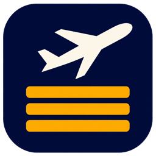

01
Three ways to use it
Use a live desktop wallpaper, save a still image or let the full-screen screen saver take over.

Departure BoardDeparture Board · macOS & Windows
Departure displays from 40 airports, as a wallpaper and screen saver. Familiar flight lettering, airport colors and local time, made for your screen.
Free · Open source · Start with sample data, no account needed

Use a live desktop wallpaper, save a still image or let the full-screen screen saver take over.
Airport-specific designs, local languages and time zones. Pages and codeshare flight numbers rotate in place.
Each monitor uses its own resolution and scale. Adjust text size, rows and spacing to suit your setup.
Airport, language, brightness, scale, motion and refresh interval, together in one settings window. Preview changes as you go.


Free · Open source · Start with sample data, no account needed
macOS 12 or later · Apple Silicon and Intel
Install with Homebrew
brew install --cask skyline-23/departure-board/departure-boardWindows 11 · No separate runtime required
Yes. Add your own AeroDataBox RapidAPI key to fetch real flights. A separate provider subscription is required. Sample data works immediately without a key.
Flights refresh at your chosen interval, using a shared cache. Language changes, paging and codeshare rotation do not make new requests. After a provider error, the app respects the server retry instructions.
The board fits the full display, then lets you adjust its scale and row count. Each monitor adapts to its own display scale. The guide walks through the settings.
Sample data and a saved still wallpaper work offline. The guide and its pictures are included with the app. Fetching new live flights needs an internet connection.